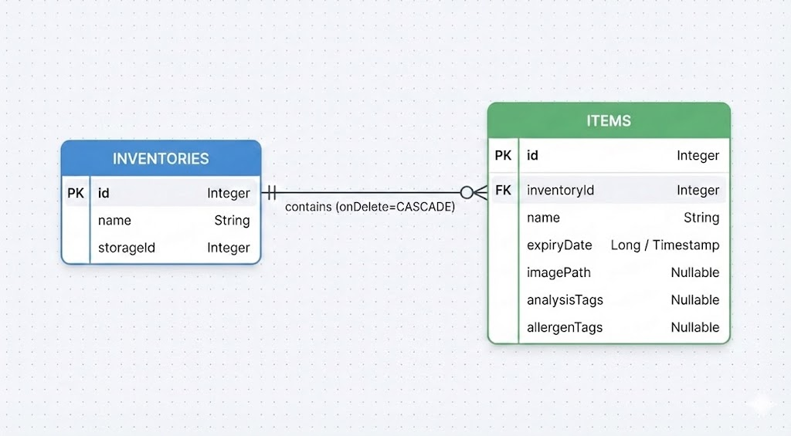

This app is about organizing your pantries and never forgetting about the food in your inventory again. This map clearly shows when food is about to expire and color codes that in a nice and simple way. It also allows you to scan food products and see what allergies could come to haunt you.
As already mentioned in the description this app is an inventory management system for food items. You are able to take pictures of the food items and select the expiry dates to never forget about expired food again.
Our main target users are people who like to organize their food items and don't want to waste food again or forget about allergies in certain items.
Our interactive prototype demonstrates the core user flow from login to inventory scanning.
View Figma Prototype →
Figure 1: SQLite Database Entity Relationship Diagram
| Problem Description (what and where) | Heuristic # | Severity | Mentioned by |
|---|---|---|---|
| When deleting an item or inventory, there is no warning dialog or undo button. | 5 | 2 | 1 |
| The FAB actions are only clickable on the icons and not the whole tile. | 5 | 2 | 1 |
| In an inventory page, you can’t add more items directly. | 7 | 3 | 2 |
| After scanning an item, there is no visual loading indicator. | 1 | 2 | 1 |
H₀: The app's features (barcode scanning, color-coding, and filtering) do not improve the user's ability to manage inventory and safety efficiently.
H₁: The app's features allow users to accurately determine product safety and expiration status with low perceived effort.
SEQ, SUS, A/B Test
Tool: MS Forms
Participants: 6
Avg. age: 23.5
Figure 1: SQLite Database Entity Relationship Diagram
| Metric | Result/Score |
|---|---|
| Task Completion Rate | [e.g. 90%] |
| Average Time on Task | [e.g. 45s] |
"Oh I just didn't read" (when trying to open barcode scanner)
"I thought these color stripes mean it's save for me to consume them"
"I was confused why the badge 'said' safe when it's already expired"
The Feedback we received was highly valuable as it highlighted key issues of our app we hadn't initially thought of. The main issues we found were the color-coded stripes for the expiry dates of the items and navigation problems regarding the barcode scanner.
For the color-coded stripes we made it more accessible and less ambiguous by adding an icon and text label to it.
For the barcode scanner, we added an additional button in the custom item entry dialog.
Contribution: App (re)design & frontend, User research
Challenges & Growth: Implementing the UI of the app wasn't much of a struggle. Main problems were UX related which we identified during user testing. Overall, the experience of this CCL was smooth as I had a teammate who took care of other coding problems so I could focus more on the frontend part of the app.
Contribution: Code, Base UI, User research
Challenges & Growth: The making of the app wasn't too hard, and the progress was mostly smooth, with just some minor bugs & permission problems that sometimes weren't noticed in the beginning.
The final implementation successfully achieved the core MVP objectives. The app effectively bridges the gap between simple inventory tracking and user safety by integrating barcode scanning with personalized dietary profiles. While the initial concept focused on basic management, the current iteration provides a solid foundation for proactive food waste prevention and allergy safety.
To elevate the user experience from a functional tool to a polished product, we have identified a few key areas for growth:
Enhanced Onboarding:
Implementing a dedicated info screen to guide users through the initial setup of dietary preferences and inventory creation.
Additional Safety Insights
Moving beyond binary "Safe/Unsafe" badges to provide clear elaborations on why an item was flagged (e.g., "Contains traces of Gluten").
Navigation & UX Refinement:
Streamlining the menu structure and refining wording to reduce cognitive load, particularly during the scanning process.